Kurume
Kurume · Fukuoka
Kurume
Highlighted on the Fukuoka map.
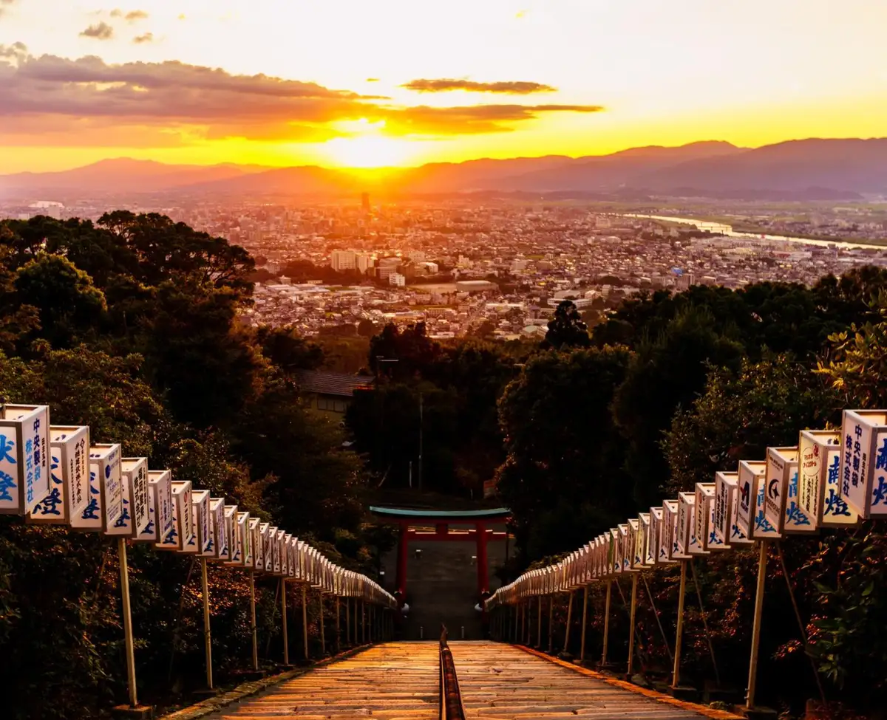
Sights
Takayoshi Taisha Oku no In
Kurume Saikurufamirii Park
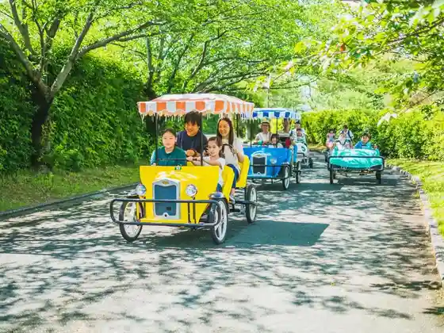
Kosumosu Kaido
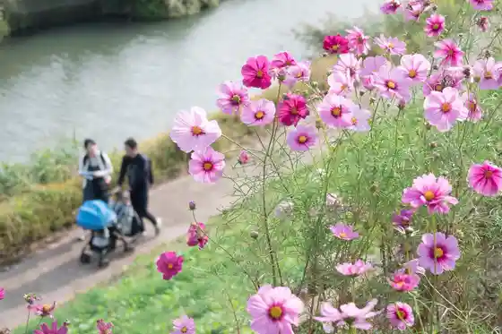
Takayoshi Taisha Kento Matsuri
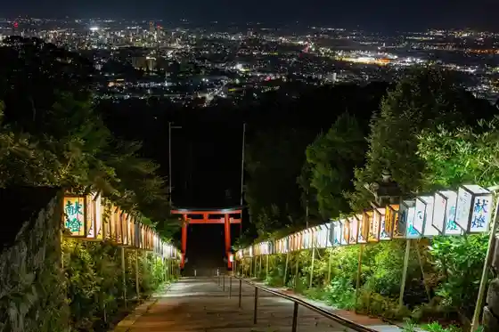
Kosumosu Park Kitano
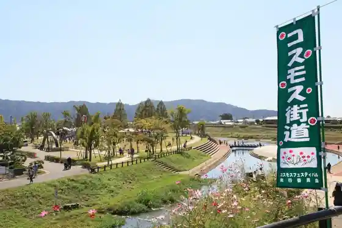
Suitengu
Omoto Yamanari Tayama Kurume Bun'in
Kyushu Rantai Shikki
Kyoho Wainarii
Shiseido Fukuoka Kurume Kojo
Ishibashi Bunka Center
Kurume Bugen Forest
Aoki Onsen
Kurume Castle Ruins
Kurume Hyakunen Park
Beniotome Shuzo
Kitano Tenmangu Shrine
Yu no Saka Kurume Onsen
Dining
月光浴
Gekkou Yoku
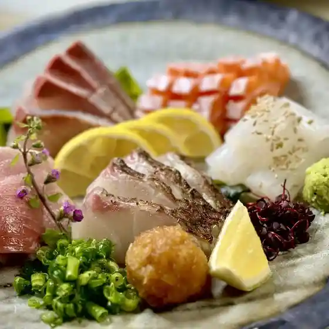
KOHA
Koha
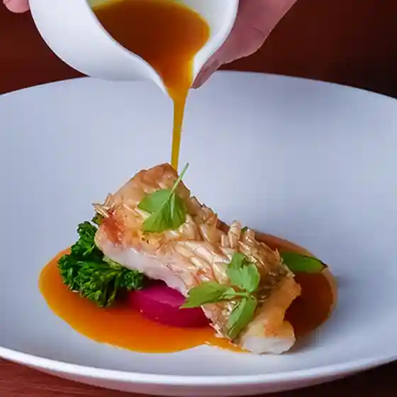
とんやどんや 久留米一番街店
Tonyadonya Kurume Ichiban Machi Mise
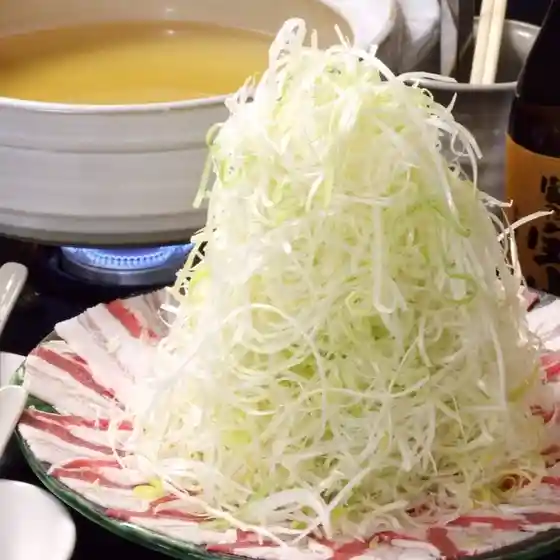
炭火焼き酒場 酉香
Sumibi Yaki Sakaba Tori Kaori
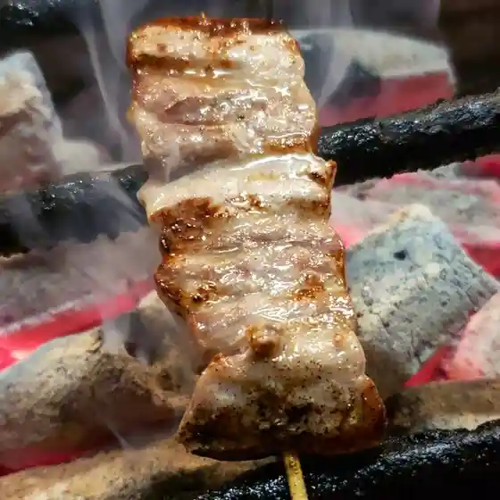
肉酒場YOLO
Niku Sakaba Yolo
旬魚馬菜 憲五百
Shungyo Uma Na Nori Gohyaku
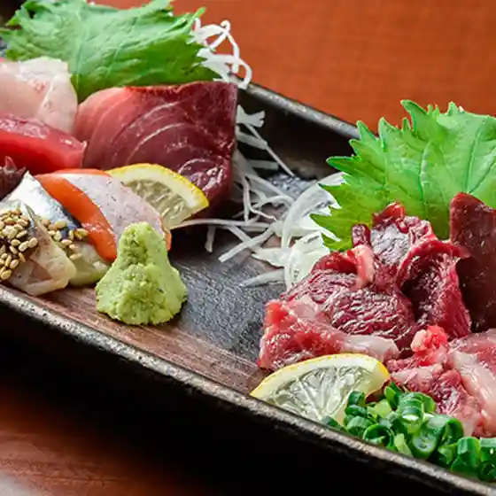
炭火ノ串や。ニューハカタスタイル 西鉄久留米駅前店
Sumibi No Kushi Ya . Nyuuhakatasutairu Nishitetsu Kurume Ekimae Mise
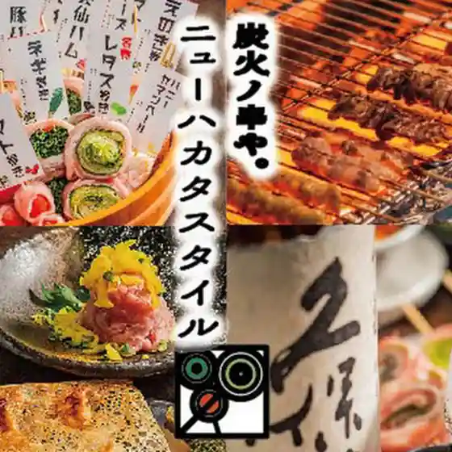
かすり屋
Kasuri Ya
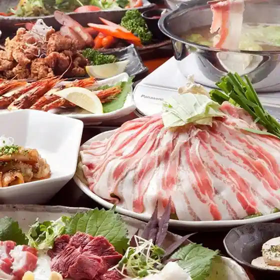
居心地酒房 我楽
Igokochi Sake Bou Ware Raku
タベルナ石
Taberuna Ishi
佐蔵
Sazou
わらびの森
Warabino Mori
櫻舞
Sakura Mai
風来坊 櫛原店
Fuuraibou Kushihara Mise
居酒屋 HITOKUCHI
Izakaya Hitokuchi
炭火焼肉 絆繁
Sumibi Yakiniku Kizuna Han
海専 松魚
Umi Sen Shougyo
まんまる
Manmaru
久留米焼鳥 つかさ
Kurume Yakitori Tsukasa
個室完備 大衆とり酒場 とりいちず 久留米店
Koshitsu Kanbi Taishuu Tori Sakaba Toriichizu Kurume Mise
炭々苑
Sumi (Kurikaesi) En
Mano a Mano
Mano A Mano
鶏ト飯トリヒロ
Niwatori To Meshi Torihiro
炭火 酒蔵 喜多
Sumibi Shuzou Kita
とり四季
Tori Shiki
魚肉菜 座頭 道安
Gyoniku Na Zatou Douan
創造とんかつ 旬菜料理 藤
Souzou Tonkatsu Jun Sairyou Ri Fuji
とっとっと酒場 もものすけ
Tottotto Sakaba Momonosuke
くいもの屋わん 西鉄久留米駅前店
Kuimono Ya Wan Nishitetsu Kurume Ekimae Mise
もつ鍋佐藤
Motsu Nabe Satou
そじ坊 ゆめタウン久留米店
Soji Bou Yume Taun Kurume Mise
和だん
Wa Dan
和処 まる吉
Wa Tokoro Maru Kichi
やきとり ぜん 諏訪野店
Yakitori Zen Suwa Yaten
カルビ横丁
Karubi Yokochou
ワンカルビ 久留米上津店
Wankarubi Kurume Kamitsu Mise
炭火焼肉 GrillParty 久留米店
Sumibi Yakiniku Grillparty Kurume Mise
串カツ田中 西鉄久留米店
Kushi Katsu Tanaka Nishitetsu Kurume Mise
愛酒場 楽㐂-LUCKY-
Aishu Ba Rakkii -Lucky-
割烹にしみ
Kappou Nishimi
九里坊 西鉄久留米駅前店
Kunori Bou Nishitetsu Kurume Ekimae Mise
to do it.
To Do It .
141酒店
141 Saketen
TACO HOLIC
Taco Holic
丸秀鮮魚店 久留米店
Maru Shuu Sengyoten Kurume Mise
通町 接吻
Toorichou Seppun
赤身焼肉 百レン
Akami Yakiniku Hyaku Ren
SouL in SeouL
Soul In Seoul
清流うなぎ 月島 総本店
Seiryuu Unagi Gatsu Shima Souhonten
居酒屋 煙舞
Izakaya Kemuri Mai
italiano h
Italiano H
ピッツェリア アメニータ
Pittsueria Ameniita
酒と饂飩 こなから
Sake To Udon Konakara
焼肉 銀しゃり 直球 カルビ 久留米店
Yakiniku Gin Shari Chokkyuu Karubi Kurume Mise
Small Dining 酒肴竹馬
Small Dining Shukou Takeuma
アスカ
Asuka
炭火焼き ひとてま
Sumibi Yaki Hitotema
ワインバルCP
Wainbaru Cp
シエ・ワシズ
Shie・Washizu
和洋/創作酒場 晩餐
Wayou / Sousaku Sakaba Bansan
Tomimatsunagiya Kurume Fukuoka Prefecture Kyushu
Tomimatsunagiya Kurume Fukuoka Prefecture Kyushu
Tomimatsunagiya Kurume Fukuoka Prefecture Kyushu
Tomimatsunagiya Kurume Fukuoka Prefecture Kyushu
Tomimatsunagiya Kurume Fukuoka Prefecture Kyushu
Tomimatsunagiya Kurume Fukuoka Prefecture Kyushu
Tomimatsunagiya Kurume Fukuoka Prefecture Kyushu
Tomimatsunagiya Kurume Fukuoka Prefecture Kyushu
Maruboshi Ramen Kurume Fukuoka Prefecture Kyushu
Maruboshi Ramen Kurume Fukuoka Prefecture Kyushu
Maruboshi Ramen Kurume Fukuoka Prefecture Kyushu
Maruboshi Ramen Kurume Fukuoka Prefecture Kyushu
Maruboshi Ramen Kurume Fukuoka Prefecture Kyushu
Maruboshi Ramen Kurume Fukuoka Prefecture Kyushu
Maruboshi Ramen Kurume Fukuoka Prefecture Kyushu
Maruboshi Ramen Kurume Fukuoka Prefecture Kyushu
Taihoramen Kurume Fukuoka Prefecture Kyushu
Taihoramen Kurume Fukuoka Prefecture Kyushu
Taihoramen Kurume Fukuoka Prefecture Kyushu
Taihoramen Kurume Fukuoka Prefecture Kyushu
Taihoramen Kurume Fukuoka Prefecture Kyushu
Taihoramen Kurume Fukuoka Prefecture Kyushu
Taihoramen Kurume Fukuoka Prefecture Kyushu
Taihoramen Kurume Fukuoka Prefecture Kyushu
Ume No Hana Kurume Kurume Fukuoka Prefecture Kyushu
Ume No Hana Kurume Kurume Fukuoka Prefecture Kyushu
Ume No Hana Kurume Kurume Fukuoka Prefecture Kyushu
Ume No Hana Kurume Kurume Fukuoka Prefecture Kyushu
Ume No Hana Kurume Kurume Fukuoka Prefecture Kyushu
Ume No Hana Kurume Kurume Fukuoka Prefecture Kyushu
Ume No Hana Kurume Kurume Fukuoka Prefecture Kyushu
Ume No Hana Kurume Kurume Fukuoka Prefecture Kyushu
La Restaurant du Haze Kurume Fukuoka Prefecture Kyushu
La Restaurant du Haze Kurume Fukuoka Prefecture Kyushu
La Restaurant du Haze Kurume Fukuoka Prefecture Kyushu
La Restaurant du Haze Kurume Fukuoka Prefecture Kyushu
La Restaurant du Haze Kurume Fukuoka Prefecture Kyushu
La Restaurant du Haze Kurume Fukuoka Prefecture Kyushu
La Restaurant du Haze Kurume Fukuoka Prefecture Kyushu
La Restaurant du Haze Kurume Fukuoka Prefecture Kyushu
Kagetsu Syokudo Kurume Fukuoka Prefecture Kyushu
Kagetsu Syokudo Kurume Fukuoka Prefecture Kyushu
Kagetsu Syokudo Kurume Fukuoka Prefecture Kyushu
Kagetsu Syokudo Kurume Fukuoka Prefecture Kyushu
Kagetsu Syokudo Kurume Fukuoka Prefecture Kyushu
Kagetsu Syokudo Kurume Fukuoka Prefecture Kyushu
Kagetsu Syokudo Kurume Fukuoka Prefecture Kyushu
Kagetsu Syokudo Kurume Fukuoka Prefecture Kyushu
Raifukuken Kurume Fukuoka Prefecture Kyushu
Raifukuken Kurume Fukuoka Prefecture Kyushu
Raifukuken Kurume Fukuoka Prefecture Kyushu
Raifukuken Kurume Fukuoka Prefecture Kyushu
Raifukuken Kurume Fukuoka Prefecture Kyushu
Raifukuken Kurume Fukuoka Prefecture Kyushu
Raifukuken Kurume Fukuoka Prefecture Kyushu
Raifukuken Kurume Fukuoka Prefecture Kyushu
Yakitori Darumuya Kurume Fukuoka Prefecture Kyushu
Yakitori Darumuya Kurume Fukuoka Prefecture Kyushu
Yakitori Darumuya Kurume Fukuoka Prefecture Kyushu
Yakitori Darumuya Kurume Fukuoka Prefecture Kyushu
Yakitori Darumuya Kurume Fukuoka Prefecture Kyushu
Yakitori Darumuya Kurume Fukuoka Prefecture Kyushu
Hiyoshimaru Kurume Fukuoka Prefecture Kyushu
Hiyoshimaru Kurume Fukuoka Prefecture Kyushu
Hiyoshimaru Kurume Fukuoka Prefecture Kyushu
Hiyoshimaru Kurume Fukuoka Prefecture Kyushu
Hiyoshimaru Kurume Fukuoka Prefecture Kyushu
Hiyoshimaru Kurume Fukuoka Prefecture Kyushu
Hiyoshimaru Kurume Fukuoka Prefecture Kyushu
Hiyoshimaru Kurume Fukuoka Prefecture Kyushu
Koro Kurume Fukuoka Prefecture Kyushu
Koro Kurume Fukuoka Prefecture Kyushu
Koro Kurume Fukuoka Prefecture Kyushu
Koro Kurume Fukuoka Prefecture Kyushu
Koro Kurume Fukuoka Prefecture Kyushu
Koro Kurume Fukuoka Prefecture Kyushu
Koro Kurume Fukuoka Prefecture Kyushu
Koro Kurume Fukuoka Prefecture Kyushu
Tachibana Udon Kurume Fukuoka Prefecture Kyushu
Tachibana Udon Kurume Fukuoka Prefecture Kyushu
Stay
久留米ステーションホテル
Kurume Suteeshonhoteru
萃香園ホテル
Suikou Sono Hoteru
グリーンリッチホテル久留米【天然温泉・有馬六ツ門の湯】
Guriinritchihoteru Kurume ( Tennen Onsen ・ Arima Roku Tsu Mon No Yu )
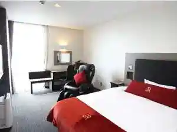
ザ・セレクトン久留米
Za・Serekuton Kurume
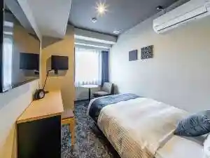
ホテルマリターレ創世 久留米
Hoterumaritaare Sousei Kurume
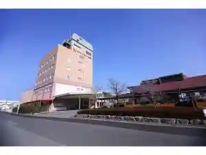
野はら邸
No Hara Tei
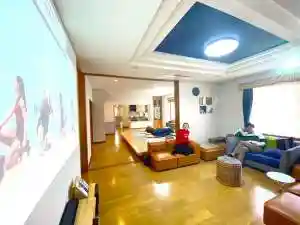
備長炭の湯 ホテル久留米ヒルズ（BBHホテルグループ）
Binchou Sumi No Yu Hoteru Kurume Hiruzu ( Bbh Hoteruguruupu )
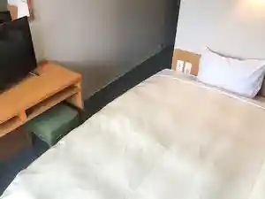
ホテルニュープラザ久留米
Hoterunyuupuraza Kurume
久留米ワシントンホテルプラザ
Kurume Washintonhoterupuraza
いやし処ほてる寛楽 久留米駅前
Iyashi Tokoro Hoteru Hiroshi Raku Kurume Ekimae
エンナンホテル 久留米
Ennanhoteru Kurume
久留米ホテル エスプリ
Kurume Hoteru Esupuri
クルメターミナルホテル
Kurumetaaminaruhoteru
東横ＩＮＮ 西鉄久留米駅東口
Touyoko I N N Nishitetsu Kurume Eki Higashiguchi
ハイネスホテル久留米
Hainesuhoteru Kurume
久大ホテル・ガレノス久留米
Kyuudai Hoteru・Garenosu Kurume
湯の坂 久留米温泉
Yu No Saka Kurume Onsen
旅館 錦水
Ryokan Nishiki Mizu
HOTEL AZ 福岡久留米店
Hotel Az Fukuoka Kurume Mise
天然田園温泉 ふかほり邸
Tennen Den'En Onsen Fukahori Tei